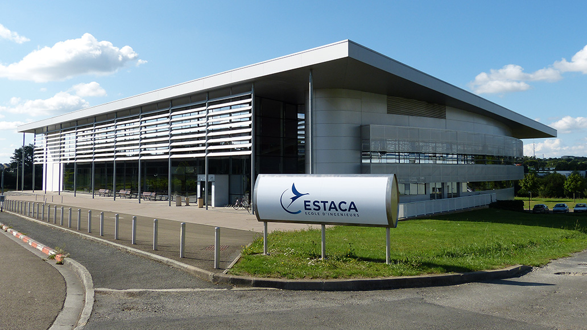
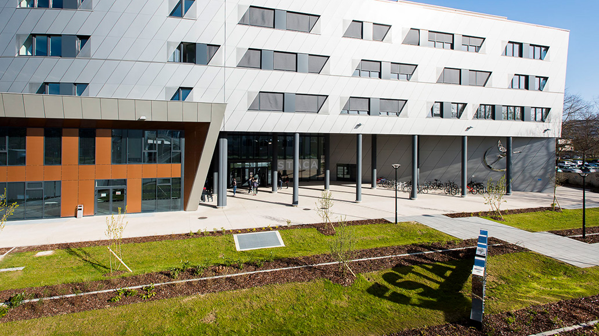

L'ESTACA
Conditions d'admission
Portes ouvertes
Cursus et débouchés
Campus
Transports
Présentation des campus
Les Différents Campus
Campus Bordeaux
Esplanade des Arts Et Métiers
3340 Talence
+33 (0) 6 65 51 08 99
Campus Laval
Parc universitaire Laval-Changé
53061 Laval Cedex 9
+33 (0) 7 54 84 86 55
Campus Paris-Saclay
12 avenue Paul-Delouvrier
78066 Saint-Quentin-en-Yvelines
+33 (0) 6 30 20 10 00
Nos 3 campus sont équipés avec :
-
Une salle des machines
-
Des laboratoires fonctionnels
-
Des amphithéâtres modernes
Des espaces de détente et de convivialité
-
Des lieux de travail confortable et adaptés
-
Des espaces de restauration rapides et efficaces
Campus de Bordeaux
Le troisième campus de l'ESTACA à Bordeaux, qui ouvrira ses portes pour la rentrée 2022, est une implantation stratégique au cœur du troisième vivier aéronautique de France et d'une région pionnière dans les nouvelles mobilités.
Bordeaux Métropole et la région Nouvelle-Aquitaine sont des piliers du pôle de compétitivité mondial Aerospace Valley "Aéronautique, Espace et Systèmes embarqués". Avec 140 000 emplois industriels, 1 900 établissements, 11% des salariés employés par les industriels adhérents du GIFAS (Thalès, Dassault aviation, ArianeGroup...) et un tiers des effectifs aéronautiques français, la région est le troisième vivier d'emplois français dans ce secteur. L'ESTACA souhaite contribuer durablement au développement de l'offre académique et à la dynamique économique du territoire. Elle mettra à disposition des grandes entreprises, des PME/TPE, des collectivités et des institutions de recherche implantées sur place ses étudiants, ses enseignants-chercheurs, ses infrastructures et ses ressources technologiques.
Campus de Laval

ESTACA Paris-Saclay est une école située dans les Yvelines, à 30 minutes de Paris, qui offre un environnement de travail idéal pour le développement des technologies de transport de demain.
Cet établissement, situé sur le territoire de l'Université Paris-Saclay, collabore avec l'un des écosystèmes académiques et scientifiques les plus riches de France, composé de nombreuses entreprises et instituts de recherche de renom (Thalès, Valéo, l'Institut de Transition Énergétique VEDECOM, etc.). Le bâtiment de plus de 13 000 m2 a été conçu pour favoriser les échanges et les rencontres, en particulier dans le grand hall d'entrée. Il garantit également une haute qualité environnementale grâce à sa conception bioclimatique, à la végétalisation de la toiture, à l'isolation extérieure du bâtiment et à la récupération des eaux de plui
Campus de Paris-Saclay

ESTACA Campus Ouest, situé à une heure trente de Paris en TGV dans le département de la Mayenne en région Pays de la Loire, a été inauguré en 2005 et offre aux étudiants un cadre de vie et d'études idéal sur le campus universitaire de Laval Changé.
L'établissement de Laval propose les mêmes enseignements que celui de Paris. La sélection des candidats est la même, les examens sont organisés simultanément, de nombreux enseignants se déplacent d'un site à l'autre, et certains cours sont partagés par visioconférence.